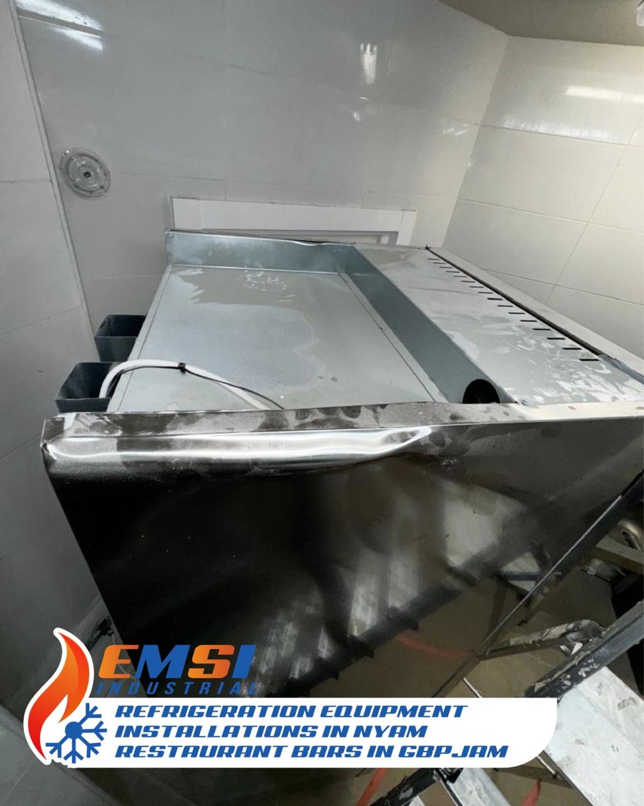
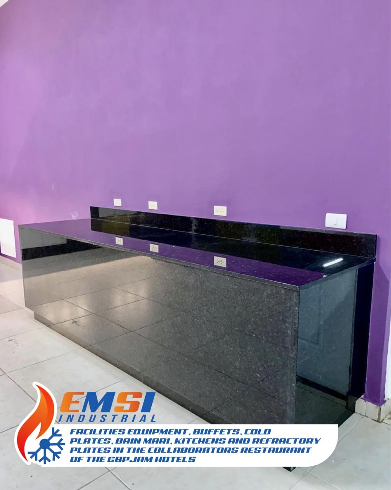
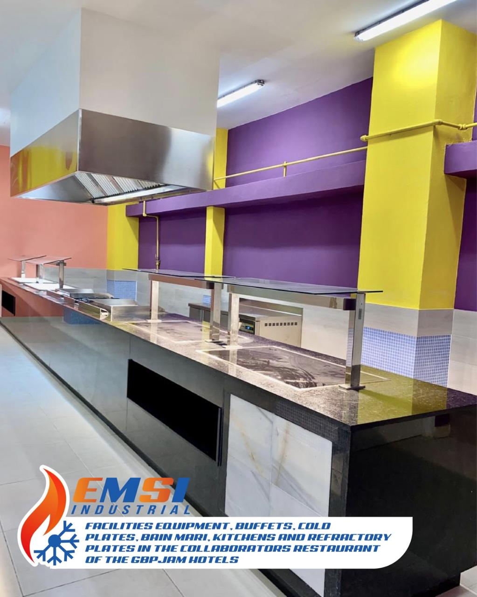
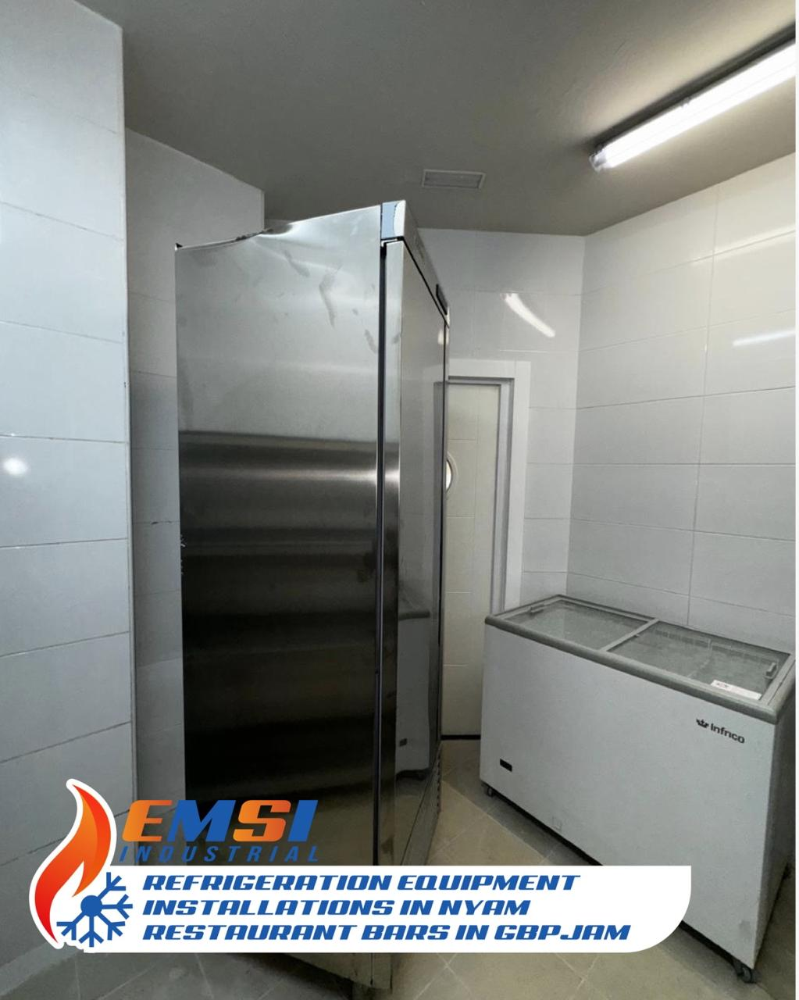

Calidad, innovación y compromiso en cada proyecto.
Somos EMSINDUSTRIAL, una empresa dedicada a soluciones técnicas y mantenimiento industrial con alta precisión y confiabilidad.

En este proyecto realizamos una instalación eléctrica industrial con estándares de alta eficiencia energética. La precisión en el montaje garantizó una ejecución sin fallas desde el primer encendido.
Además, se aplicaron técnicas de cableado estructurado para un mantenimiento más seguro y ágil en el futuro. El cliente quedó altamente satisfecho con la entrega final.

Diseñamos y ejecutamos un sistema de automatización para control de motores con interfaz programable. Este trabajo permitió a la empresa cliente reducir su consumo y aumentar la productividad.
Los sensores industriales integrados aseguraron una respuesta rápida y precisa en todo el proceso. Todo fue probado bajo escenarios reales de operación.

Se realizó mantenimiento predictivo en maquinaria crítica del área de producción, utilizando tecnología de escaneo térmico y análisis de vibración para evitar fallos.
El resultado fue un aumento considerable en el tiempo útil de los equipos y una reducción significativa en el tiempo de parada.

Este proyecto consistió en la instalación y calibración de un sistema de climatización industrial de gran escala. La eficiencia energética fue clave en todo el diseño.
Se logró mantener una temperatura óptima de forma automatizada, adaptándose dinámicamente a la carga térmica del entorno.
En este video mostramos la implementación paso a paso de un sistema de bombeo inteligente. Se utilizaron válvulas electrónicas y sensores de nivel que permiten una operación 100% automática.
Ideal para sistemas de riego o distribución de agua industrial, este sistema está diseñado para minimizar consumo y errores humanos.
Observa en acción nuestra solución de control de acceso industrial con lector biométrico y sistema centralizado. Ideal para áreas restringidas en fábricas y almacenes.
En el video se destaca la facilidad de uso y la seguridad que ofrece este sistema, adaptable a cualquier infraestructura.
Trabajamos con herramientas y tecnologías avanzadas para garantizar resultados eficientes.